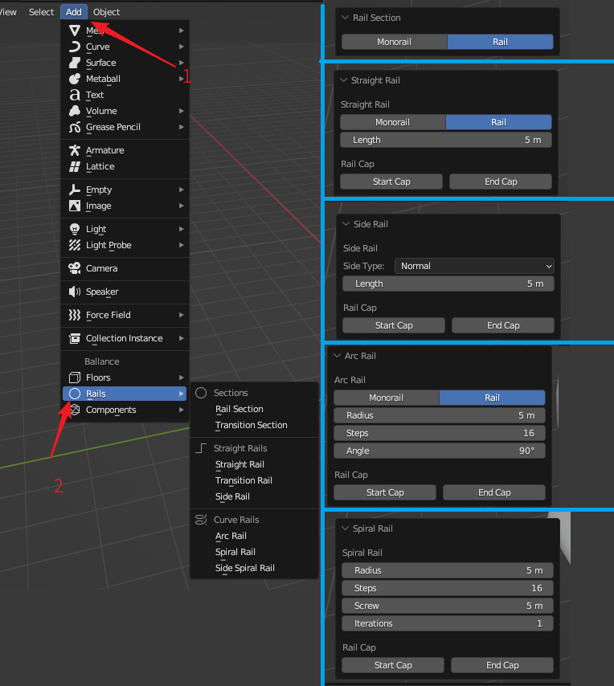

Add Rail
In the 3D view, click Add - Rails to expand the Add Rails menu. The menu is shown on the left side of the image below.

The right side of the picture above shows the interface for adding some rails, and we will introduce them in turn later, from top to bottom on the right side are: Add Rail Section, Add Straight Rail, Add Side Rail, Add Arc Rail, and Add Spiral Rail.
Rails with non-standard data
BBP's rail adding menu is designed for new players to add rails quickly, and is not designed for skilled mapper to add rails. For cases where you need rails with non-standard data, such as rails with non-standard spacing or non-standard section, you need to build the rail section with Blender's own Circle operation, and then generate the entire rail with the Extrude, Bridge, or Spiral modifiers. In this way, you can control all the parameters of each step to meet your specific needs for rail parameters.
Source of the rail parameters
The various parameters of rails used in the Rails Add menu are derived from actual in-game measurements and from the experience of several mappers in the Ballance community over more than a decade.
The rail section radius and gauge are derived from years of mapping experience and measurements. Side rail tilt degree data is calculated by BallanceBug. Mono and double rail transition sinking data from the calculation by Imbalanced Dream. Spiral rail spacing is measured from Level 9 and Level 13.
Rail Sections
In the Add Rails menu, under the Sections category, you can add rail sections. A rail section is the outline of a rail, and the creation of a rail section is usually the first step in the creation of various types of shaped rails, e.g. rails made by lofting, extruding etc.
Rail Section
To create a rail section, you can choose in the panel to create a mono or double rail section.
When creating a mono rail section, the octagonal rail section is automatically created with the flat side edge facing up, while the double rail section is not (vertex tip facing up). If you need to change this behavior, you need to go into edit mode after creation and manually rotate the vertices of the rail section so that the flat side or vertex tip of the rail section faces up.
Transition Section
The mono and double rail transition section will create a rail section that is suitable for mono and double rail transitions. This rail section is created without specifying any parameters.
Straight Rails
In the Add Rails menu, under the Straight Rails category, you can add straight rails.
Straight Rail
A Straight Rail is a straight rail of rail. To create a straight rail you need to specify a Length. You can also choose to create a straight double rail or a mono rail.
When creating a mono rail, similar to a section, the flat side of the rail section is automatically turned upwards, and this behavior can be modified by entering edit mode after creation and then rotating.
The creation of straight rails also supports the capping properties, which are controlled by the Start Cap and End Cap options located under Rail Cap, which are checked to cap the corresponding end. Capping is the process of automatically adding face for the end of a rail and correctly handling its normal. This is usually done to ensure that the rail is aesthetically pleasing where it comes into contact with other surfaces or objects, rail-to-rail joints do not need to be capped.
Transition Rail
Mono and double transition rail can often be seen as an advanced use of Transition Section creation, where the section created by the transition section is extruded and the normals are taken care of to produce the result created by this option. To create a mono or double transition rail you need to specify a Length, which is also supported by the capping property.
Side Rail
Side rails are created by specifying a Side Type which can be either Normal (for paper or wood balls) or Stone Specific (for stone ball specific). Side rails for paper and wood balls are the usual side rails that stone balls cannot pass through. Stone Specific side rails are side rails that are more tilted and can be passed by stone balls, and of course, paper and wood balls.
In addition to the side rail type, side rail creation also requires the Length and capping attributes.
Curve Rails
In the Add Rails menu, under the Curve Rails category, you can add curved rails.
Arc Rail
The first thing you need to do with an arc rail is to specify the Angle and Radius, which indicates how much the rail will turn at what radius. Generally speaking, angles of 90, 180, and 270 degrees are more common, but any number of degrees can be specified. The radius is usually adjusted as needed. For the double rail arc, the radius is the distence between arc rail rotation center to the double rail section center. For the mono rail arc rail, is the distence between arc rail rotation center to the mono rail section center.
Steps of the arc rail, the number of steps indicates the number of segments of the arc rail, the larger the number, the smoother the arc rail looks, relatively, the vertices will be more, the storage space and rendering requirements are also higher, so you need to choose a reasonable value.
The Flip option for arc rail allows you to flip (in other word, mirror) the generated structure along a specified axis, and the flip options available on all three axes can accommodate the generation of all possible arc rail structures.
Arc rails also support double-rail mono-rail selection, you can create mono-rail arc rails and double-rail arc rails. The capping attribute is also supported.
Spiral Rail
Spiral rail, or spiral double rail, is similar to arc rail in that you need to specify Radius, which is the radius of rotation, but not the angle, since it always rotates in 360 degrees.
Spiral rails have an Iterations property, which indicates how many times the rail will spiral up, and a Screw property, which indicates the distance between each iteration.
The spiral rail also needs to set the Steps property, which has the same meaning as the arc rail. However, it should be noted that the number of steps refers to the number of steps in each iteration, not the overall number of steps. Therefore, when adjusting the iteration attribute, you do not need to change the Steps attribute again.
Side Spiral Rail also has capping and flip property.
Side Spiral Rail
Side Spiral Rail, similar to spiral rail, but the ball is rolled along the side, similar to side rail.
Side Spiral Rail does not have a Screw property, because Side Spiral Rail is designed so that adjacent spins share a common edge, so the screw is fixed.
The Radius, Iterations and Steps attributes in the Side Spiral Rail settings have the same meaning as the spiral rail. Side Spiral Rail also have a capping attribute.
Spiral Rail also has capping and flip property.
Extra Transform
When adding straight rails and curved rails, you can always set a property known as the Extra Transform. Its effect is consistent with the Extra Transform field in adding floors, both serving the purpose of visual edit.